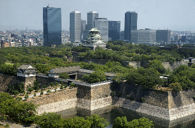
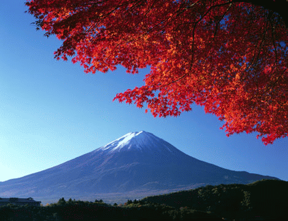

Willkommen Sie auf unserer Webseite. Wir widmen uns dem Thema japanische Inseln.
Japan hat vier grösste Inseln - hier befindet sich die Liste. Nach dem Klick werden Sie automatisch auf die Website der gewünschten Insel weitergeleitet.
Diese Website beschäftigt sich mit der Insel Honshū.
Auf Honshū liegt die japanische Hauptstadt Tokio. Es ist die größte der vier japanischen Hauptinseln. Übersetzt bedeutet Honshū soviel wie Hauptprovinz. Honshū ist ungefähr 1300 Kilometer lang und hat eine Breite zwischen 50 und 240 Kilometern. Es hat eine Fläche von 230.500 Quadratkilometern und stellt somit ca. 60% der Gesamtfläche Japans. Hiermit ist Honshū die siebtgrößte Insel der Welt und liegt mit einer Bevölkerung von 103 Millionen Einwohnern auf Rang zwei der bevölkerungsreichsten Inseln (Java liegt auf Platz eins mit 124 Millionen Einwohnern). Gegliedert ist Honshū in fünf Regionen und 34 Präfekturen. Die Regionen sind Chugoku, Kansai, Chubu, Kanto und Tohoku. Drei Viertel aller Großstädte und Ballungszentren liegen auf Honshū, in dem Ballungsraum in Tokio und Yokohama wohnen 25% der Bevölkerung. Auch die landwirtschaftliche Bedeutung Honshūs ist erwähnenswert, da sich dort wichtige Reis- und Obstanbauflächen befinden. So ist z.B. Niigata ein wichtiger Reisproduzent, in Yamanashi und Aomori werden Früchte produziert.
Quellen:
{kind=link}
{kind=link}